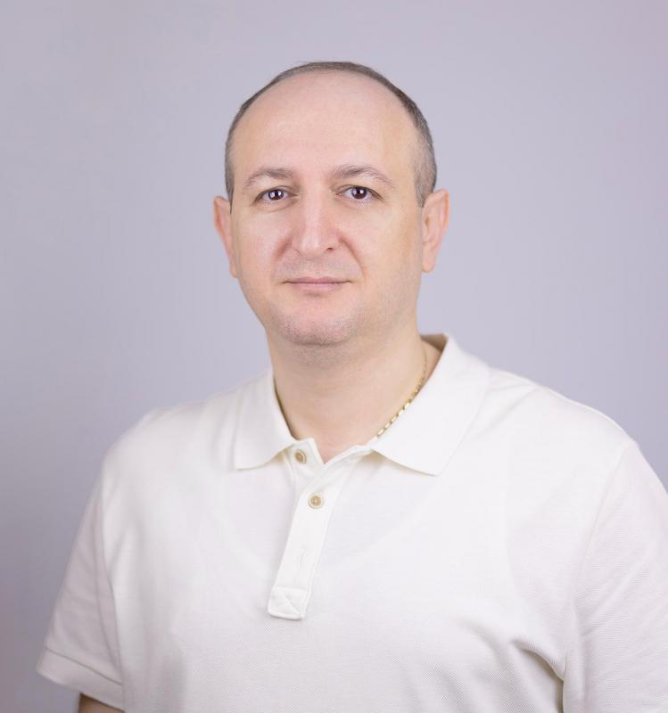
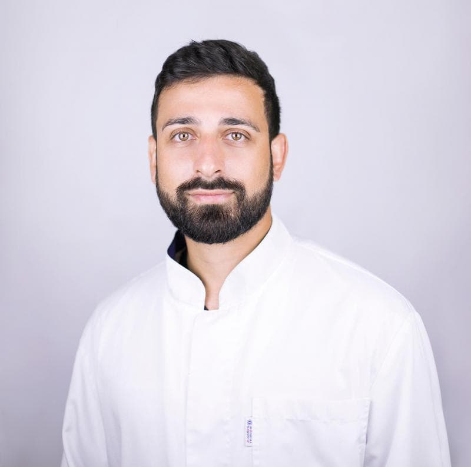
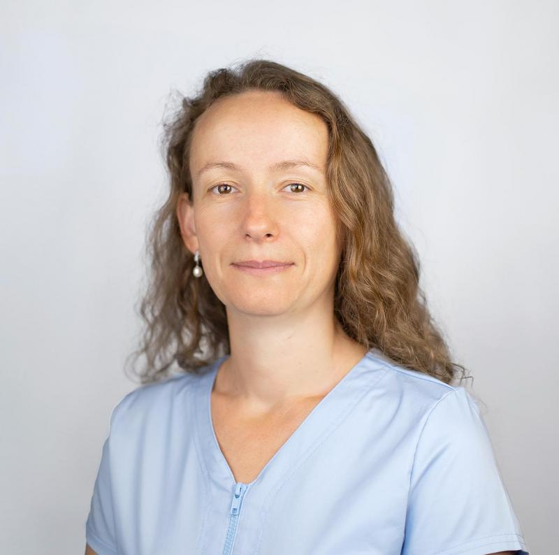
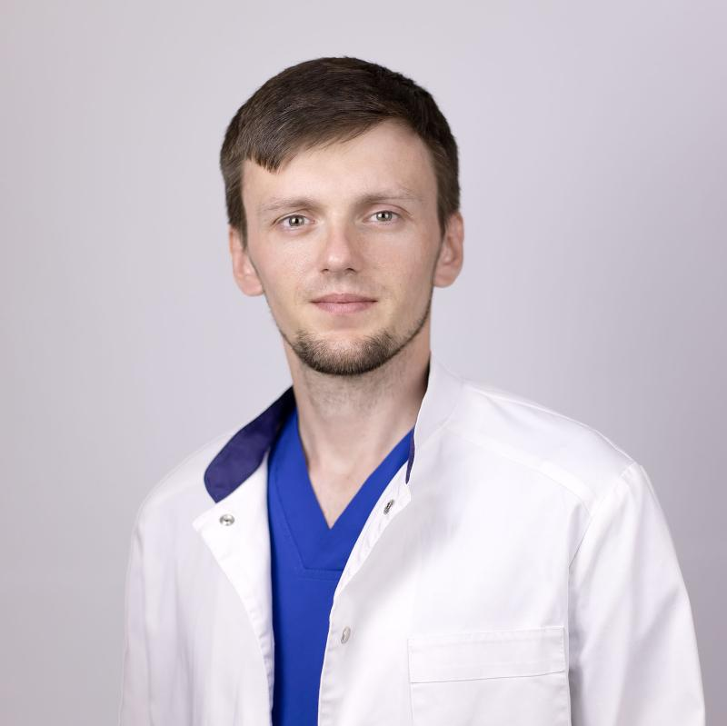
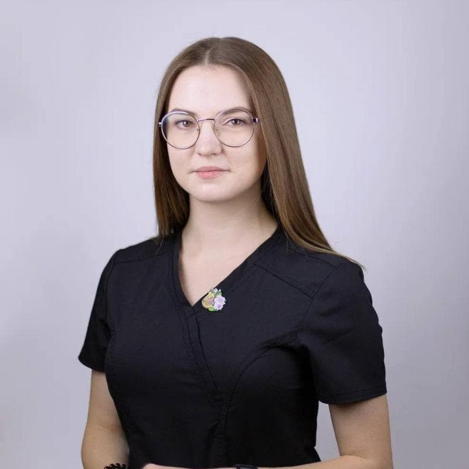
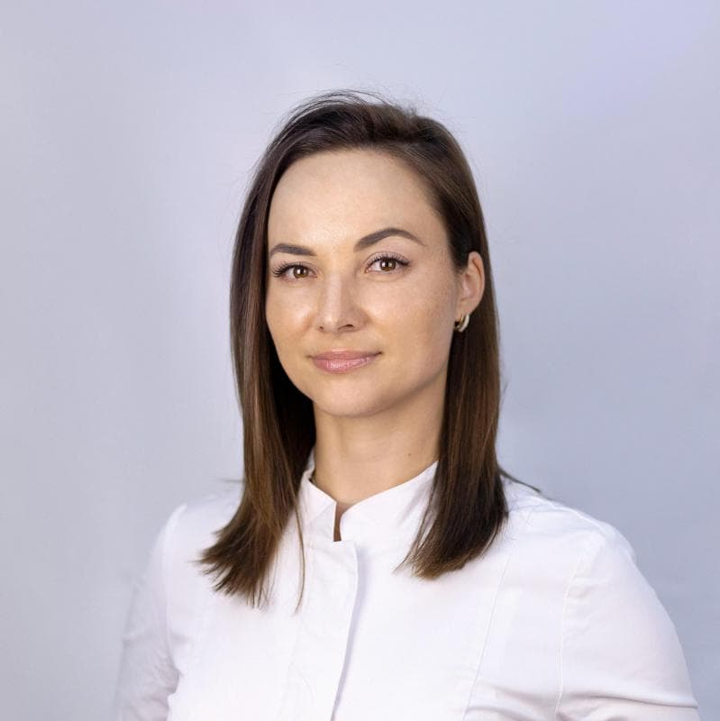
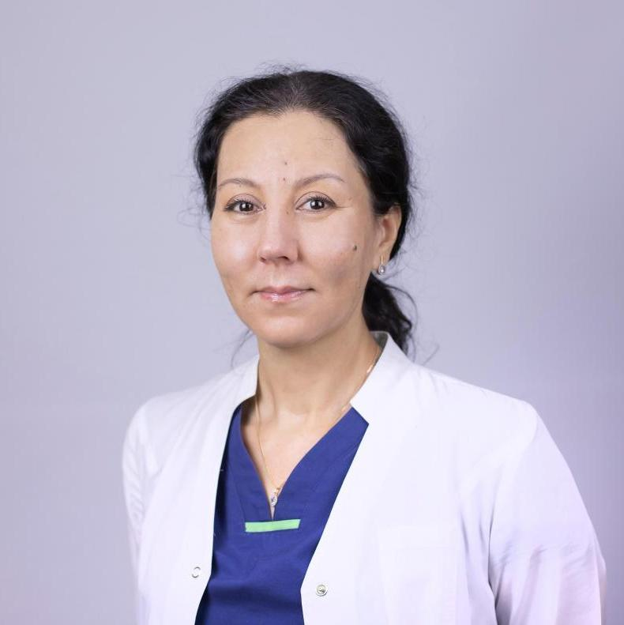

![Logo]()
Онкопациенты первые в хирургической очереди
Мы понимаем важность времени в хирургическом лечении рака молочной железы. Наша очередь на операции для онкопациентов составляет не более 2 недель, в связи с приоритетом диагноза.О нас
Отделение хирургических методов лечения опухолей молочной железы(онкологическое отделение № 1) является частью клиники высоких медицинских технологий им. Н.И. Пирогова Санкт-Петербургского государственного университета — одного из старейших медицинских учреждений Санкт-Петербурга и Северо-Западного региона.
На базе онкологического отделения № 1 проводится консультативный приём, диагностика и лечение пациентов с заболеваниями молочных желез. Основным направлением работы онкологов — маммологов является лечение рака молочной железы. В год в отделении производится более 350 операций на молочных железах.
Направления
-
Хирургическое лечение заболеваний молочной железы
-
Хирургическое лечение и диагностика опухолей кожи с реконструктивно-пластическим этапом при необходимости
-
Эстетическая хирургия
В нашей клинике врач имеет в своем распоряжении самые передовые методы исследования патологии молочной железы и ставит диагноз на основании данных полученных при следующих лабораторно-инструментальных исследованиях:
- Маммография
- УЗИ молочных желез
- МРТ молочных желез
- Морфологическая диагностика
- Генетическая диагностика
На приеме врач-маммолог на основании полученных данных анамнеза и обследования проводит дифференцированный диагноз рака молочной железы с такими заболеваниями как:
- Фиброз молочной железы, аденоз склерозирующий или несклерозирующий папилломатоз, папилломы без атипии внутрипротоковые
- Гиперплазия обычного типа или умеренная без атипии, кисты молочной железы
- Гранулемы, мастит, жировой некроз (посттравматический), дуктоэктазия
- Липома, гемартома, гемангиома, гематома, нейрофиброма, фиброаденома
Особенностью нашей клиники является комплексный и индивидуальный подход к лечению каждого пациента. После постановки диагноза, но до начала лечения каждый клинический случай попадает на обсуждение комиссии онкологов клиники. На данном этапе обсуждаются все особенности течения заболевания, показания и противопоказания к каждому из методов терапии и подбирается оптимальный план лечения.
Оперативное лечение
- органосохраняющие операции при доброкачественных образованиях: секторальные резекции любой локализации
- мастэктомии и онкопластические резекции
-
реконструктивные операции на молочной железе при/после мастэктомии:
- одномоментная реконструкция имплантатами (протез устанавливается сразу после удаления молочной железы);
- отсроченная реконструкция имплантатами (спустя время после удаления молочной железы устанавливается тканевой экспандер, а после эндопротез);
- реконструкция кожными лоскутами (реконструкция молочной железы с использованием собственных тканей и имплантатов).
Все оперативные вмешательства при злокачественных опухолях выполняются с определением «сторожевых» (сигнальных) лимфоузлов, в том числе с использованием методики ICG. Во время оперативного вмешательства пациенту вводят в ткани, расположенные рядом с опухолью, специальный флуоресцентный контрастный раствор. Вещество попадая в сосудистое русло становится видимым под прицелом специальной оптики в инфракрасном спектре. Благодаря этой перспективной технологии у хирурга появляется возможность выполнить максимально органосохраняющую операцию и определить невидимые при традиционном вмешательстве лимфоузлы, поражённые метастазами. На сегодняшний день ICG-методика является золотым стандартом не только в онкологии, но и в хирургии в целом. Она проста в использовании и безопасна для пациента.
Онкодерматологи нашей клиники занимаются диагностикой и лечением онкологических заболеваний, в частности:
- злокачественные новообразования кожи меланоцитарного происхождения, такие как: меланома кожи,
- злокачественные немеланомные опухоли кожи, к которым относятся базальноклеточная карцинома (базалиома) и плоскоклеточный рак кожи,
- злокачественные опухоли мягких тканей, такие как саркома,
- доброкачественные опухоли мягких тканей, например: липома, фиброма,
- доброкачественные образования кожи: невусы, папилломы, кожный рог, кератома и т.д.
Онкодерматологи нашей клиники имеют богатый опыт не только в диагностике, консервативном и хирургическом лечении пациентов, но и в динамическом наблюдении за пациентами, которое так необходимо им после лечения. Лечение новообразований кожи у пациентов всегда сугубо индивидуально и зависит от многих факторов: возраста человека, особенностей организма, состояния его здоровья.
В нашем отделении вы можете получить следующие виды лечения:
- Хирургическое лечение. Обычно применяется при обнаружении у пациента меланомы, плоскоклеточного или базальноклеточного рака кожи. Решение о проведение оперативного вмешательства очень часто зависит от стадии заболевания и его агрессивности, принимается врачом по согласованию с пациентом.
- Лазерная хирургия доброкачественных образований кожи — простых невусов, папиллом, кератом.
- Фотодинамическая терапия как опухолей кожи, так и мягких тканей. Обычно используется при базальноклеточном раке кожи.
- Иммунотерапия немеланоцитарных опухолей. Обычно используется при базальноклеточном раке кожи и его предшественнике — актиническом кератозе.
- Эстетическая коррекция возрастных изменений лица и шеи (омолаживающие операции в области лица и шеи - фейслифт, включая эндоскопические методики, хирургическая бьютификация лица у пациентов относительно молодого возраста).
- Эстетическая коррекция периорбитальной области (омолаживающие операции в области век, коррекция азиатского века, коррекция птоза верхнего века).
- Эстетическая коррекция наружного носа с восстановлением функции носового дыхания (ринопластика).
-
Эстетическая коррекция периоральной области:
- подтяжка верхней губы - хейлопластика Bullhorn,
- увеличение верхней и нижней губы - V-Y-хейлопластика,
- резекция мышцы, опускающей угол рта (DAO),
- резекция комков Биша.
- Эстетическая коррекция ушных раковин (отопластика).
-
Эстетическая коррекция молочных желез:
- увеличение с использованием имплантатов и с помощью собственной жировой ткани,
- уменьшение молочных желез при гипертрофии,
- подтяжка молочных желез.
-
Эстетическая коррекция туловища, конечностей:
- абдоминопластика (классическая, мини-абдоминопластика, напряжённо-боковая) с одномоментной коррекцией грыж передней брюшной стенки (если таковые имеют место),
- корригирующие эстетические операции в области туловища и конечностей после массивной потери массы тела (боди-лифт, брахиопластика, феморопластика),
- эстетическая коррекция ягодиц (глютеопластика) с использованием ягодичных имплантатов и собственной жировой ткани,
- эстетическая коррекция формы голеней (круропластика) с использованием имплантатов или собственной жировой ткани,
- липосакция, липоскульптура туловища, конечностей, лица,
- липофиллинг кистей с целью омоложения
- Эстетическая коррекция наружных половых органов (интимная пластика) у мужчин и женщин.
- Эстетическая коррекция рубцов (шрамов).
- Реконструктивные операции в области лица при патологии врождённого и приобретённого характера.
Наши врачи
-

Дашян Гарик Альбертович
Заведующий онкологическим отделением № 1, врач-онколог, д.м.н. -

Ахмедов Руслан Мерзиалиевич
Врач-онколог, пластический хирург онкологического отделения № 1 -

Семилетова Юлия Вадимовна
Врач-онколог онкологического отделения № 1, к.м.н. -

Журов Александр Сергеевич
Врач-онколог онкологического отделения № 1 -

Константинова Валерия Валерьевна
Врач-хирург, маммолог онкологического отделения № 1 -

Чебышёва Ольга Алексеевна
Врач-онколог 2-ой квалификационной категории онкологического отделения № 1 -

Тураханова Гульнора Тураевна
Врач пластический хируг онкологического отделения № 1
Дашян Гарик Альбертович
Заведующий онкологическим отделением № 1, врач-онколог, д.м.н.
Ведёт приём: Лечебно-диагностический комплекс на ул. Кораблестроителей, д. 20, к. 1
Направление деятельности
Злокачественные и доброкачественные новообразования молочных желез:- рак молочной железы,
- саркома молочной железы,
- липома молочной железы,
- фиброаденома молочной железы,
- киста молочной железы,
- мастопатия,
- мастодиния
Ахмедов Руслан Мерзиалиевич
Врач-онколог, пластический хирург онкологического отделения № 1
Ведёт приём: Лечебно-диагностический комплекс на наб. р. Фонтанки, д. 154
Направление деятельности
- Хирургическое и лекарственное лечение рака молочной железы,
- Онкопластические и реконструктивно-пластические одномоментные / отсроченные операции у больных раком. молочной железы,
- Наследственный рак молочной железы,
- Пластическая хирургия молочной железы,
Семилетова Юлия Вадимовна
Врач-онколог онкологического отделения № 1, к.м.н.
Ведёт приём: Лечебно-диагностический комплекс на ул. Кораблестроителей, д. 20, к. 1
Направление деятельности
- Диагностика и лечение злокачественных новообразований кожи (меланома кожи, базалиома, плоскоклеточный рак кожи, саркомы кожи, за исключением саркомы Капоши),
- Диагностика и лечение злокачественных опухолей мягких тканей (саркомы мягких тканей),
- Доброкачественные образования кожи (невусы «родинки», кератомы, папилломы, кожный рог),
- Лазерная хирургия доброкачественных образований кожи,
- Фотодинамическая терапия опухолей кожи, мягких тканей.
Журов Александр Сергеевич
Врач-онколог онкологического отделения № 1
Ведёт приём: Лечебно-диагностический комплекс на наб. р. Фонтанки, д. 154
Направление деятельности
- Лечение злокачественных новообразований молочной железы,
- Лечение злокачественных новообразований кожи,
- Радикальные органосохраняющие операции при раке молочной железы,
- Пересадка свободного кожного лоскута (радикальные резекции), в том числе различные онкопластические варианты,
- Вакуум-аспирационная биопсия доброкачественных образований в молочной железе,
- Иссечение злокачественных новообразований кожи любых локализаций, в том числе с реконструктивными методиками,
- Радикальная мастэктомия,
- Подкожная радикальная мастэктомия с одномоментной реконструкцией эндопротезами (с установкой экспандера или постоянного протеза),
- Отстроченные реконструкции молочных желёз с использованием эндопротезов и экспандеров,
- Реконструкция молочной железы с использованием собственных тканей отсроченная и одномоментная,
- Биопсия сторожевых лимфоузлов при раке молочной железы и меланоме,
- Секторальная резекция и ампутация молочной железы,
- Хирургическое лечение гинекомастии,
- Восстановление сосково-ареолярного комплекса,
- Различные виды мастопексий и редукционных пластик молочных желез, в том числе и симметризирующие после реконструкции пораженной железы,
- Удаление образований кожи с пересадкой кожных лоскутов на сосудистой ножке.
Константинова Валерия Валерьевна
Врач-хирург, маммолог онкологического отделения № 1
Ведёт приём: Лечебно-диагностический комплекс на наб. р. Фонтанки, д. 154
Направление деятельности
- Диагностика и лечение рака молочной железы, онкопластическая хирургия молочной железы, реконструктивная хирургия молочной железы,
- Лекарственное лечение рака молочной железы - химиотерапия, таргетная терапия, гормонотерапия, иммунотерапия,
- Реабилитация пациентов после завершения лечения рака молочной железы: лечение осложнений хирургического лечения, лучевой терапии,
- Первичная диагностика онкологических заболеваний.
Чебышева Ольга Алексеевна
Врач-онколог 2-ой квалификационной категории онкологического отделения № 1
Ведёт приём: Лечебно-диагностический комплекс на ул. Кораблестроителей, д. 20, к. 1
Направление деятельности
- профилактика и ранняя диагностика опухолей молочной железы,
- дифференциальная диагностика опухолевых заболеваний молочной железы,
- заболевания грудных желез у мужчин.
Тураханова Гульнора Тураевна
Врач пластический хируг онкологического отделения № 1
Ведёт приём: Лечебно-диагностический комплекс на ул. Кораблестроителей, д. 20, к. 1
Направление деятельности
- Эстетическая коррекция возрастных изменений лица и шеи,
- Эстетическая коррекция периорбитальной области,
- Эстетическая коррекция наружного носа с восстановлением функции носового дыхания (ринопластика),
- Эстетическая коррекция периоральной области,
- Эстетическая коррекция ушных раковин (отопластика),
- Эстетическая коррекция молочных желез,
- Эстетическая коррекция туловища, конечностей,
- Эстетическая коррекция наружных половых органов,
- Эстетическая коррекция рубцов (шрамов),
- Реконструктивные операции в области лица,
- Реконструкция ушной раковины,
- Реконструкция молочной железы после онкологических операций.
Часто задаваемые вопросы
Назначение даты госпитализации
Как правило, врач на очной /онлайн консультации определяет дату госпитализации и выдает пациенту бланк с перечнем необходимых обследований для госпитализации.
Какие необходимы анализы для госпитализации?
Все необходимые обследования указаны данном файле (ссылка на перечень). Представленный ниже перечень обследований является обязательным. Если Вы прибудете на госпитализацию с неполным перечнем обследований (некачественными обследованиями), к сожалению, возникнут трудности с организацией лечения.
Какова длительность госпитализации?
В среднем сроки госпитализации составляют 3-5 суток, при наличии медицинских показаний сроки могут быть увеличены.
Возможно ли лечение по ОМС?
Да, возможно.
Необходимо ли направление 057-у?
Нет. Если Вам одобрил врач нашего отделения оперативное лечение по квоте, Вам необязательно брать направление (справку 057/у) по месту жительства. Вас госпитализируют без него. Для выполнения в нашей клинике таких исследований, как КТ (компьютерная томография), МРТ(магнитно-резонансная томография) необходимо направление на ДИАГНОСТИКУ форма 057у-04. Взять направление можно у онколога или терапевта в поликлинике по месту прикрепления полиса ОМС.
Сколько времени нужно ожидать госпитализации?
Пациенты с раком молочной железы являются первыми в очереди на операцию. В среднем ожидание госпитализации занимает менее 7 дней (при условии полностью пройденных обследований, необходимых для госпитализации). Для пациентов с доброкачественными образованиями срок ожидания составляет также 7 дней.
Что взять с собой в стационар?
- Документы (паспорт, полис, СНИЛС) - Результаты обследований - Лекарства, которые Вы принимаете на постоянной основе - Предметы личной гигиены - Личные вещи (халат, тапочки и т.д.) *после операции на молочной железе нежелательна одежда, которая одевается через голову
Я-родственник пациента стационара, как и когда я могу его навестить?
С ПН по ПТ: с 15.00 до 20.00 СБ и ВС: с 10.00 до 13.00 и с 15.00 до 19.00
Можно ли госпитализироваться для диагностического обследования?
Да, в рамках платных услуг возможна госпитализация на отделение для прохождения диагностических обследований (КТ, МРТ, УЗИ, маммография, ФГДС и тд)
Принимаете ли Вы на стационарное лечение граждан других стран?
Да, принимаем на платной основе.
Как быть, если я не могу приехать на госпитализацию в назначенный день?
Если вы не можете прибыть в указанный день и время, просим вас сообщить об этом заранее по телефону: 8-904-607-00-33
Возможно ли сделать у вас операцию по поводу доброкачественного образования молочной железы?
Да, возможно как в рамках ОМС, так и платно.
Как возникает рак молочной железы?
В основе развития рака молочной железы лежит изменение характера и скорости деления клеток. В норме любые клетки, которые по структуре отличаются от нормальных, подлежат немедленной ликвидации. За это отвечает иммунная система. Если защитные силы работают недостаточно активно, организм не может ликвидировать аномальную (раковую) клетку, что и приводит к развитию онкологического процесса. Несколько факторов могут увеличить риск возникновения рака молочной железы, такие как генетические предрасположенности, наличие определенных мутаций генов BRCA1 и BRCA2, а также возраст (старше 50 лет), плотность молочной железы, уровень физической активности, потребление алкоголя, уровень гормонов и т. д. Важно отметить, что у большого количества людей с высоким риском не развивается рак молочной железы, и наоборот, некоторые люди с низким риском могут заболеть. Рак молочной железы – это сложный процесс, и исследования по его причинам и факторам риска продолжаются.
Какие существуют виды рака молочной железы?
Рак молочной железы — это обобщенное название группы патологических процессов (опухолей). Он может быть классифицирован на различные типы в зависимости от его характеристик. Первое — это биологическая структура, подтип образования. В зависимости от наличия рецепторов эстрогена и прогестерона на поверхности опухолевых клеток, эпидермального фактора роста типа 2 (HER2), количества активно размножающихся клеток (ki-67) выделяют: люминальный А, Люминальный В HER2-негативный, Люминальный В HER2-позитивный, HER2-позитивный, трижды негативный. Также виды рака молочной железы можно разделить на инвазивный и неинвазивный рак. Неинвазивный рак (карцинома in situ) – злокачественная опухоль, которая растет внутри долек и протоков молочной железы и не выходит за их пределы. Инвазивная карцинома- склонна к инвазии, прорастанию в окружающие ткани. Важно отметить, что знание конкретного типа рака молочной железы играет решающую роль в выборе оптимального метода лечения.
Симптомы РМЖ
Симптомы рака молочной железы неспецифичны и могут варьироваться у разных людей. В большинстве своем патологический процесс развивается постепенно. На начальных этапах, чаще всего, отсутствуют какие-либо симптомы, и, обычно, рак обнаруживается случайно, в ходе профилактического обследования. В целом же клиническая картина рака молочной железы может включать: · Образование уплотнений или узлов в груди или подмышечной области. · Изменение размера или формы груди. · Изменения во внешнем виде сосков, такие как втяжение или уплотнение. · Выделения из сосков, которые могут быть с примесью крови · Кожные изменения, такие как появление узелков или огрубения, покраснения · Боль или дискомфорт в груди или сосках. По мере прогрессирования процесса наблюдаются симптомы общей интоксикации организма. Возможны такие признаки как: слабость; повышение температуры тела (высокие показатели держатся постоянно или большую часть времени); снижение работоспособности и общее недомогание. Важно помнить, что эти симптомы могут быть вызваны иными состояниями, нежели рак молочной железы. Однако если у вас возникли подобные симптомы, важно обратиться к врачу для проведения диагностики и определения подлинной причины. Раннее обращение за медицинской помощью значительно увеличивает шансы на успешное лечение рака молочной железы.
Стадии РМЖ
Рак молочной железы, как и многие другие виды рака, обычно классифицируется по стадиям. Общепринятая система стадирования рака молочной железы включает в себя следующие стадии: · Стадия 0: это некоторые предраковые состояния, которые обычно называют раком in situ (то есть рак на месте) или неинвазивным раком. Это означает, что изменения клеток произошли только определенном участке ткани и не проросли в окружающую ее ткань; · Стадия I: Рак находится только в груди и имеет диаметр менее 2 см. Опухоль хорошо отграничена, отдаленных метастазов нет. · Стадия II: Рак может быть либо размером более 2 см, но не более 5 см, и/или может иметь распространение на окружающие лимфатические узлы; · Стадия III: Рак обычно уже довольно крупного размера, более 5 см, а также может быть распространен на лимфатические узлы и близлежащие ткани; · Стадия IV: На этой стадии рак молочной железы уже распространился на другие органы тела, такие как легкие, печень, кости или мозг. Это общая классификация, которая используется для оценки распространения рака молочной железы в организме. Каждый случай индивидуален, и стадия рака влияет на лечение. Важно понимать, что стадирование имеет наибольшее значение с точки зрения прогнозов. Чем раньше будет начато лечение, тем выше процент выживаемости. Потому так важно начинать раннюю терапию патологического состояния.
Прогноз при РМЖ
Прогноз при раке молочной железы зависит от многих факторов, включая стадию рака, тип и гистологическую структуру опухоли, гормональный статус опухоли, возраст пациента, общее состояние здоровья и наличие метастазов. Чем раньше рак обнаружен и начато лечение, тем лучше прогноз. Лечение ранних стадий рака молочной железы, как правило, более эффективно, и шансы на выздоровление выше. Если рак обнаружен исключительно внутри молочной железы, пятилетняя выживаемость обычно очень высока. Однако, если рак был обнаружен на поздних стадиях, когда он уже распространился на другие части тела, прогноз может быть менее благоприятным. Обязательно следует обсудить свой индивидуальный прогноз с врачом, так как только он сможет оценить все аспекты вашего заболевания и дать более точное представление о возможных методах лечения и поддержки.
Можно ли у вас выполнить биопсию образования молочной железы?
Да, мы проводим все виды биопсий для наиболее тщательной диагностики природы образований и в случае необходимости, начала лечения в наиболее ранние сроки.
Можно ли у вас выполнить биопсию образования кожи?
Безусловно, доктора нашего отделения выполняют различные виды биопсий образований кожи (панч-биопсия, соскоб образования, инцизионная биопсия) в зависимости от клинической картины каждого конкретного случая.
Чем отличается трепан-биопсия от тонкоигольной аспирационной биопсии? Что такое панч-биопсия? Какая необходима в моем случае?
Биопсия применяется как наиболее информативный метод диагностики природы образования. При осмотре, исходя из клинической картины и результатов исследования (УЗИ молочных желез, ММГ, МРТ молочных желез, а в случаях образований кожи - результатов дерматоскопии), строго индивидуально подбирается одна из методик диагностики. Так, например, тонкоигольная аспирационная биопсия с последующим цитологическим исследованием применяется при диагностике кист и фиброаденом. Её преимуществами являются небольшой диаметр иглы и как следствие - безболезненность. Однако, при повышенной чувствительности молочных желез, либо низком болевом пороге возможно её проведение под местной анестезией. Трепан-биопсия выполняется иглой большего диаметра, что позволяет получить фрагмент тканей, необходимый для более тщательного гистологического, а при необходимости и иммуногистохимического анализа, и как следствие, более чёткого понимания природы образования. Для точности исследования все вышеуказанные процедуры проводятся под УЗ-наведением. Панч-биопсия используется как высокоинформативный метод диагностики образований кожи, при котором забирается измененный участок для гистологического исследования . В отдельных случаях, этот метод используется как лечебный при возможности забрать весь участок. Хотелось бы отдельно отметить регулярные слова благодарности пациентов за абсолютную безболезненность при проведении биопсии, благодаря чуткому отношению наших докторов и эффективную местную анестезию.
Сколько времени ожидать результат трепан-биопсии и как мне сообщат о готовности?
С момента проведения процедуры взятия материала, до получения результатов гистологического исследования проходит около 4-5 дней. Наши доктора находятся в тесной связи с пациентами, поэтому о готовности анализа каждому пациенту сообщается лично по телефону, после чего назначается повторный осмотр для интерпретации результатов и обсуждения дальнейшей тактики лечения или наблюдения.
В каких случаях возможно сохранить грудь при лечении рака?
В настоящее время, по всему миру существует тенденция к уменьшению объема хирургических вмешательств при раке молочной железы. Докторами нашей клиники выполняется большой спектр реконструктивно-пластических операций, что позволяет достичь наиболее желанного эстетического результата.
Что такое мастэктомия и кому она показана?
Мастэктомия - хирургическая операция по удалению молочной железа и подмышечных лимфатических узлов. Объем операции определяется исключительно индивидуально, исходя из размеров опухоли, стадии заболевания, результатов иммуногистохимического анализа, наличия BRCA мутаций, расположения образования, размера молочной железы.
Что такое сигнальный лимфатический узел?
Сигнальный лимфатический узел - узел, который стоит первым на пути оттока лимфы от органа.
Кому делается биопсия сигнальных лимфатических узлов? В чем её отличие от подмышечной лимфодиссекции?
Биопсия сигнальных лимфатический узлов выполняется пациентам, у которых по результатами иммуногистохимического исследования был определен люминальный подтип опухоли. В отличие от подмышечной лимфодиссекции, при данной операции удаляется 1-2 лимфатических узла, что полностью значительно снижает риски послеоперационных осложнений.
Что такое лимфедема? Какие меры профилактики лимфедемы?
Лимфедема - это постепенное увеличение объема конечности вследствие нарушения оттока лимфы и ее последующего скопления в межклеточном пространстве. Лимфедема, как осложнение при хирургическом лечении рака молочной железы крайне редкое явление при соблюдении элементарных мер профилактики: - ограничение нагрузок на больную конечность. Стоит отметить, что объем движений после операции никак не страдает. Также возможны нормированные физические нагрузки при ношении компрессионного рукава (второй класс компрессии); - исключение в/в инъекций, забора крови с конечности на стороне операции; - нежелательно измерение давления на больной руке;
Мне будет больно после операции?
Нет. Для снижения болевого синдрома в нашей клинике проводится комплекс мероприятий, таких как премедикация перед операцией, высокий уровень работы анестезиологов, дозированное назначение анальгетиков после
Будет ли у меня возможность связаться с вами после выписки из стационара?
Обязательно! Мы находимся в тесной связи с нашими пациентами не только после выписки, но и в дальнейшем, когда пациент проходит послеоперационное лечение или находится на диспансерном наблюдении.
Что такое гормональная терапия?
Гормональная терапия показана пациентам с люминальными молекулярными подтипами опухолей. На поверхности таких опухолей есть рецепторы к женским половым гормонам - эстрогену и прогестерону, которые стимулируют рост злокачественной опухоли. Цель гормональной терапии заключается в подавлении этого стимулирующего влияния и, следовательно, профилактике рецидива после операции или при лечении метастатического рака молочной железы.
Какие побочные эффекты от гормональной терапии?
Побочные эффекты гормональной терапии зависят от группы препаратов, которые используются в лечении. Так, при применении антиэстрогенов (тамоксифен, торемифен) повышается риск тромбообразования и атипической гиперплазии эндометрия. Поэтому пациентам в группе риска тромбоэмболических осложнений не следует использовать данные препараты. На фоне приема антиэстрогенов обязательно регулярно посещать гинеколога с оценкой толщины эндометрия с периодичностью 1 раз в 6 месяцев. Еще одна распространенная группа препаратов - ингибиторы ароматазы (анастрозол, летрозол, эксеместан). На фоне приема этих препаратов увеличивается риск остеопороза, поэтому необходимо осуществлять профилактику - принимать препараты кальция и витамина D, а также 1 раз в год выполнять остеоденситометрию для оценки минеральной плотности костей. Также для профилактики остеопороза часто применяется золедроновая кислота - внутривенно капельно 1 раз в 6 месяцев.
Как долго длится гормональная терапия?
Стандартная продолжительность гормонотерапии после радикального лечения (при I-III стадии) заболевания составляет 5 лет. В случае наличия факторов риска, определяемых Вашим врачом, длительность гормонотерапии может увеличиваться до 7-10 лет. В случае лечения метастатического рака молочной железы (IV стадия) лечение проводится до прогрессирования заболевания.
Почему нужна лучевая терапия после органосохраняющей операции?
Даже после идеально выполненной операции в ткани молочной железы могут оставаться микроскопические опухолевые клетки, не видимые глазом. Лучевая терапия проводится на всю молочную железу и уничтожает эти клетки. Многочисленными исследованиями доказано, что органосохраняющая операция в комбинации с лучевой терапией равно эффективна полному удалению молочной железы - мастэктомии, поэтому всем пациентам после органосохраняющей операции назначается лучевая терапия (исключение составляют пациенты старше 70 лет с I стадией заболевания и люминальным подтипом опухоли).
Когда следует начинать лучевую терапию?
Лучевая терапия назначается в сроки от 4 до 12 недель после операции при условии полного заживления послеоперационных ран. При невозможности начать лучевую терапию в указанные сроки эффективно проводить лучевую терапию не позднее 6 месяцев после операции. При необходимости адъювантной химиотерапии после операции лучевая терапия проводится через 3-4 недели после завершения лекарственной терапии (исключение составляют капецитабин и олапариб, которые назначаются после лучевой терапии).
Какова продолжительность лучевой терапии?
Продолжительность лучевой терапии зависит от режима фракционирования. Фракционирование - это разделение суммарной эффективной дозы облучения на сеансы, что позволяет безопасно подвести требуемую дозу облучения, не вызывая лучевых осложнений. В лечении рака молочной железы используются два режима: традиционный и гипофракционирование. При традиционном режиме разовая доза составляет 1,8-2,0 Грей, количество сеансов - 25, суммарная доза облучения 48-50 Грей и по продолжительности занимает около 5 недель. В режиме гипофракционирования разовая доза облучения увеличивается, что позволяет подвести суммарную дозу за меньшее количество сеансов. Применяются разные варианты гипофракционирования: 18 сеансов по 2,5 Грей, 16 сеансов по 2,66 Грей, 15 сеансов по 2,67 Грей, 5 сеансов по 6 Грей. Выбор режима фракционирования определяет врач-радиотерапевт на основании возраста пациента, объема облучения, правой или левой молочной железы и других факторов.
Какие побочные эффекты могут быть после лучевой терапии?
Лучевая терапия наряду с хирургией является локальным методом лечения, поэтому побочные эффекты от лучевой терапии по больше степени затрагивают облучаемую область. После лучевой терапии при раке молочной железы могут наблюдаться покраснение кожи (по типу солнечного ожога), отечность, сухость, а также зуд и уплотнение кожи молочной железы. В редких случаях облучение молочной железы может приводить к фиброзу в легких или нарушению сердечной деятельности, однако при правильной разметке лучевая терапия безопасна, так как доза облучения рассчитывается так, чтобы минимально затрагивать здоровые ткани.
Что такое химиотерапия?
Химиотерапия - это метод системного лечения злокачественных опухолей, при которой применяются лекарственные препараты, нарушающие рост и деление опухолевых клеток - фактически, разрушая их. Химиопрепараты применяются системно (в основном, внутривенно и в некоторых случаях в виде таблеток), поэтому химиотерапия воздействует на все опухолевые клетки, которые есть в организме - как в первичной опухоли, так и на микрометастазы, которые еще не видимы глазом, но могут циркулировать в крови.
Будет ли у меня химиотерапия?
Решение о проведении химиотерапии принимается на основании размера первичной опухоли, наличия пораженных лимфатических узлов и гистологических характеристик опухоли. В некоторых случаях опухоль необходимо уменьшить для того, чтобы провести более эстетически приемлемую операцию, в других - необходимо посмотреть, как опухоль реагирует на химиотерапию до операции, чтобы иметь возможность скорректировать послеоперационное лечение. Иногда необходимость проведения химиотерапии определяется уже после операции, если по результатам гистологического исследования послеоперационного материала был выявлен более агрессивный молекулярный подтип или метастатически пораженные лимфатические узлы.
Что такое неоадъювантная (предоперационная) химиотерапия?
Неоадъювантная химиотерапия - это вид лекарственного лечения, проводимый ДО операции. Целью неоадъювантной химиотерапии является уменьшение размера опухоли для того, чтобы выполнить менее обширную и более эстетически приемлемую операцию, или оценить ответ опухоли на лечение, чтобы иметь возможность скорректировать послеоперационную терапию в случае недостаточного ответа. Химиотерапия перед операцией проводится при высоком риске рецидива, определяемому по сочетанию нескольких факторов, в том числе при молодом возрасте пациентки, большой первичной опухоли, а также при агрессивных молеклярных подтипах, таких как трижды-негативный и HER2-позитивный.
Что такое адъювантная (послеоперационная) химиотерапия?
Адъювантная химиотерапия проводится ПОСЛЕ операции, когда первичной опухоли в организме уже нет. Цели адъювантной химиотерапии отличаются от неоадъювантной и направлены на профилактику рецидива заболевания после радикального лечения. После проведенной операции и лучевой терапии в кровотоке могут оставаться невидимые глазом микроскопические опухолевые клетки, которые невозможно убрать с помощью местного воздействия. Обладая системным эффектом, адъювантная химиотерапия воздействует на все опухолевые клетки, находящиеся в организме и разрушает их, таким образом снижая вероятность возврата заболевания.
Как долго длится химиотерапия?
Длительность химиотерапии зависит от молекулярного подтипа опухоли и выбранной схемы лечения. Курс химиотерапии может состоять из 4-х, 6-ти или 8-ми циклов в зависимости от схемы. В понятие “цикл” входит промежуток времени между введениями химиопрепаратов и по продолжительности может занимать 2 или 3 недели (возможен еженедельный режим введения в случае Паклитаксела). Таким образом, стандартная “красно-белая” химиотерапия состоит из 8 циклов (4 “красных - доксорубицин+циклофосфамид, и 4 “белых” - паклитаксел или доцетаксел) с промежутком в 3 недели, то есть всего продолжительность составит 24 недели (6 месяцев), или с промежутком в 2 недели - 16 недель (4 месяца).
Потеряю ли я волосы?
Механизм действия химиотерапии состоит в разрушении клеток, которые быстро делятся (“размножаются”) - к ним относятся клетки опухоли. К сожалению, в организме не только опухолевые клетки быстро делятся, но также и клетки волосяных фолликулов, эпителия кишечника и клетки костного мозга. Именно поэтому на фоне химиотерапии пациенты теряют волосы, иногда страдают от кишечных расстройств и вынуждены контролировать анализы крови. Есть некоторая вероятность, что волосы выпадут не полностью, однако такие случаи скорее исключение, чем правило. Поэтому после 2-3 цикла химиотерапии волосы начнут заметно выпадать, однако по завершении химиотерапии вновь начинают отрастать, поэтому ситуация обратима.
Что такое таргетная терапия? Кому назначается таргетная терапия?
Таргетная терапия (от английского “target” - “цель, мишень”) - метод системного лечения, направленный на специфические рецепторы на поверхности опухолевой клетки. Некоторые опухоли молочной железы имеют на своей поверхности большое количество рецепторов к онкобелку HER2neu. Таргетная терапия направлена именно на эти рецепторы, что обусловливает ее избирательное действие на опухоль и невысокую токсичность лечения.
Какие побочные эффекты у таргетной терапии?
Частота побочных эффектов у пациентов на таргетной терапии значительно ниже, чем при проведении химиотерапии, однако у каждого лекарственного препарата побочные эффекты все же могут встречаться. Основными побочными эффектами таргетной анти-HER2 терапии являются кардиотоксичность (влияние на сердце), кожная сыпь и диарея. Кардиотоксичность может проявляться в снижении функции сердца (фракции выброса), что может не вызывать симптомов, однако на фоне таргетной терапии обязательно необходимо выполнять эхокардиографию (УЗИ сердца) 1 раз в 3 месяца. Кожная сыпь чаще всего может проявляться при применении пертузумаба, а диарея - при лапатинибе. При появлении побочных эффектов - проконсультируйтесь со своим лечащим врачом, который подберет вам сопроводительную терапию.
Если таргетная терапия работает только против опухолевых клеток, то почему у меня возникают побочные эффекты?
К сожалению, у каждого лекарственного препарата могут возникать побочные эффекты и таргетная терапия - не исключение. Частота и выраженность побочных эффектов при таргетной терапии значительно ниже, чем при химиотерапии, поэтому таргетная терапии обладает более избирательным действием.
Что такое меланома и как ее диагностировать?
Меланома – это злокачественная опухоль, развивающаяся из меланоцитов (клеток, синтезирующих пигмент меланин). Чаще всего она возникает на неизмененной коже, реже в области меланоцитарных невусов– «родинках». Первичная диагностика меланомы происходит с помощью дерматоскопии (оптическая система с многократным увеличением), которая позволяет заподозрить злокачественное образование кожи. Однако основным достоверным признаком диагностики является –гистологический.
Что такое базалиома?
Базалиома (базальноклеточная карцинома) кожи - это злокачественное образование кожи, развивающееся из атипичных клеток базального слоя эпидермиса (кератиноцитов). Стоить отметить, что из всех ЗНО кожи базальноклеточная карцинома не дает метастазов, развивается крайне медленно, годами. На начальном этапе представляет из себя розовое или телесного цвета пятнышко, сверху которого могут образовываться корочки, оно может кровоточить и чесаться, превращаясь в незаживаемую рану.
Как лечится базальноклеточный рак кожи?
Существует много различных методов лечения, такие как лучевая терапия, фотодинамическая терапия, лазерная деструкция, криотерапия. Однако есть только один метод радикального лечения –это хирургический. Онколог вам может предложить все существующие методы, но пациент сам выбирает тот или иной метод лечения.
Что делать после радикально удаления меланомы кожи?
Обязательный динамический контроль, который включает в себя осмотр всех кожных покровов и использованием дерматоскопа, УЗИ регионарных лимфатических узлов, органов малого таза и брюшной полости, анализы крови на ЩФ, ЛДГ, витамин Д раз в 3 месяца в первый год после радикального удаления меланомы.
Красное образование на коже, что это?
Это так называемая гемангиома – доброкачественное образование, возникающее из клеток эндотелия кровеносных сосудов. По своей сути это порок развития кожи, который не представляет опасности для жизни. Лечение довольно простое – склирозирование (запаивание) питающего сосуда.
Что такое кератома и как ее лечить?
Кератома- это доброкачественное образование кожи, образующееся вследствие более плотного прилегания роговых частиц и усиления процесса кератинизации эпидермального слоя. Чаще всего они образуются у людей после 40 лет и подвергающимся солнечному излучению. Кератома представляет собой коричневого или желтого цвета бляшку с шелушащейся поверхностью. Они могут чесаться, при травматизации отваливаться, образуя розовое пятнышко, затем на этом месте вновь могут образовываться кератома. Редко они бывают единичными, чаще всего множественные. Диагностировать кератому можно как визульно, так и с помощью дерматоскопии. Лечению они подлежать в единственном случае – это желание пациента удалить образование с этетической точки зрения.
Возрастают ли риски рака кожи, если была другая онкология?
Чаще всего нет. Меланома и рак кожи – это самостоятельные заболевания, у которых нет прямой зависимости с другими онклогическими заболеваниями. Но есть ряд случаев, когда лечение другого злокачественного образования вызывает рак кожи. Например, химиотерапия, лучевая терапия могут стать причиной иммунодефицита – а это считается одним из этиологических факторов риска рака кожи и меланомы. В связи с этим после завершения лечения необходимо проводить осмотр кожных покровов и дерматоскопию всех образований кожи не реже 1 раза в год.
Возможно ли сделать у вас операцию по поводу доброкачественного образования молочной железы?
Да, возможно как в рамках ОМС, так и платно.
Что такое ВАБ (вакуум-аспирационная биопсия)?
Вакуум-аспирационная биопсия (ВАБ) - это малоинвазивная методика, позволяющая подтвердить диагноз и выполнить полное удаление доброкачественных новообразований молочной железы. ВАБ – прекрасная альтернатива секторальной резекции. С 2022 г. в нашем отделении выполнено более 100 вакуум-аспирационных биопсий с успешным удалением новообразований. После данной лечебно-диагностической манипуляции не требуется период реабилитации и нет косметических дефектов. За одну процедуру ВАБ позволяет удалить образования в обеих молочных железах и несколько образований в одной железе через один прокол.
Какие показания и противопоказания для проведения ВАБ?
Показания к ВАБ молочной железы могут быть как диагностические, так и лечебные: · непальпируемые и пальпируемые новообразования молочной железы до 2,0 см (от 2,0 до 2,5 см возможность удаления определяется врачом в каждом конкретном случае); · атипичная протоковая и дольковая гиперплазия; · фиброаденома; · внутрипротоковая папиллома; · доброкачественные новообразования перед планированием беременности и ЭКО; · доброкачественные новообразования, увеличивающиеся в размерах при динамическом наблюдении; · радиальный рубец; · склерозирующий аденоз; · рецидивирующие кисты. Противопоказания к проведению ВАБ молочной железы : · образования, располагающиеся подкожно; · отсутствие визуализации образования при УЗИ молочной железы; · подтвержденное злокачественное новообразование; · размер образования более 2,5 см; · воспалительный процесс; · заболевания свертывающей системы крови.
Какие преимущества у ВАБ?
- сохранение формы молочной железы; - быстрое одномоментное удаление нескольких образований; - отсутствие косметических дефектов; - не требует реабилитации; - амбулаторные условия выполнения; - психологический комфорт; - одномоментное достижение лечебного и максимального косметического эффекта.
Что такое киста молочной железы (киста груди)?
Киста молочной железы – это отграниченное скопление жидости в молочной железе. В протоковой системе молочной железы постоянно секретируется и реабсорбируется (обратно всасывается) жидкость. Когда проток блокируется или количество жидкости становится больше, чем количество реабсорбиремой, то жидкость накапливается и формируется киста.
Кисты злокачественные?
Кисты груди как правило не являются злокачественными, и наличие кист существенно не увеличивает риск развития рака. Существует редкое заболевание, называемое интракистозным раком, когда внутри кисты развивается рак, но эти кисты выглядят необычно на УЗИ, и при цитологическом исследовании содержимого этих кист можно выявить опухолевые клетки. Кисты могут представлять угрозу с той точки зрения, что женщины с множественными кистами могут расслабиться по поводу образований в молочной железе и должным образом не проверяться. Это может привести к запоздалой диагностике.
Как лечат кисты?
Мелкие кисты, которые не вызывают симптомов и по данным УЗИ/маммографии не вызывают онконастороженность у врача - не требуют лечения. В случаи сомнений и подозрений в характере образования необходимо выполнить вакуум аспирационную биопсию (ВАБ). В ходе процедуры, желательно под контролем УЗИ, игла вводится в полость кисты и откачивается содержимое. Если в кисте водянистая жидкость, она может исчезнуть после процедуры. Если содержимое густое, то не всегда удается ее откачать. Это не повод для беспокойства. Желательно содержимое кисты отправить на цитологическое исследование и убедиться, что клеток рака нет. Если у женщины множество мелких кист, то маммолог может рекомендовать динамическое наблюдение с периодическим УЗИ. Нет единого мнения о том, как лечить кисты груди, которые вызывают жалобы. Некоторые врачи считают, что если киста прощупывается, то следует его пунктировать. Другие считают, что, если она имеет вид типичной кисты, ее можно оставить под наблюдением. Кисты, которые являются болезненными, часто пунктируют, чтобы уменьшить дискомфорт. Для удаления кисты редко рекомендуется хирургическое вмешательство. Обычно только те кисты, которые рецидивируют после повторных пункций или вызывают подозрения на злокачественный характер, должны быть удалены хирургически.
Могут ли кисты вернуться?
Кисты могут повторно появиться после аспирационной биопсии или могут развиваться новые кисты в близлежащих тканях молочной железы
Как восстановить грудь после мастэктомии?
Учитывая, что после мастэктомии (полного удаления молочной железы) имеется дефицит покровных тканей, реконструкция проходит в 2 этапа. На первой операции врач устанавливает под мышцу экспандер, который имеет специальную мембрану для его заполнения физиологическим раствором в течение нескольких недель. После полного расширения экспандер остается в таком состоянии около 6 месяцев, чтобы ткани и кожа смогли растянутся. Затем врач проводит вторую операцию, на которой заменяет экспандер на постоянный имплант. Иногда женщины, которые перенесли мастэктомию только одной молочной железы, совмещают вторую реконструктивную операцию и подтяжку или увеличение здоровой груди, чтобы обе молочные железы выглядели симметрично. Планировать реконструкцию следует по прошествии не менее полугода после мастэктомии и не менее 8 месяцев после лучевой терапии. Решение о реконструкции груди после мастэктомии зависит от пациентки. Кто-то чувствует себя комфортно и без молочной железы, некоторые чувствуют себя лучше после реконструкции. Если пациентка решает не делать реконструкцию, есть возможность использования внешних протезов, бюстгальтеров с наполнителями или специальных пластичных материалов для создания иллюзии обычной груди. Важно обсудить все возможности с лечащим врачом и выбрать наиболее подходящий метод восстановления в вашем случае.
В каких случаях можно провести реконструкцию одновременно с мастэктомией?
Показаниями для одномоментной реконструкции молочной железы имплантами являются: - стадия заболевания, которая позволяется выполнить подкожную мастэктомию - анатомические особенности пациентки - желание пациентки - отсутствие показаний для проведения лучевой терапии в послеоперационном периоде (облучение может повысить риск осложнений после установки имплантов)
Какие существуют методы реконструкции?
- с использованием искусственных материалов (имплантов) - с использованием собственных тканей, взятых с других частей тела (лоскутов) Иногда используется комбинация этих методов. Выбор методы реконструкции обсуждается с лечащим врачом и зависит от нескольких факторов: - стадия заболевания - планируемое лечение после операции - изначальный размер молочной железы - анатомические особенности пациентки - наличие сопутствующих заболеваний - курение - перенесенные в течение жизни операции
Будет ли восстановленная грудь соответствовать моей здоровой груди? Следует ли корректировать другую грудь?
Восстановленная грудь будет соответствовать второй насколько это возможно. Восстановленная молочная железа не будет на 100% такой же, как и раньше или точно такой же, как вторая непрооперированная железа. Кроме того, в реконструированной железе не будет прежней чувствительности. При необходимости возможна эстетическая коррекция формы и размера второй молочной железы – устранение ее обвисания (птоза), исправление формы и размера. Результат таких операций – не просто восстановление отсутствующей, но создание максимально естественной, красивой, пропорциональной по форме и размеру груди.
Как восстановить ареолу и сосок?
Существует большое разнообразие вариантов реконструкции сосково-ареолярного комплекса. Выбор техники осуществляется хирургом в зависимости от показаний, а также ориентируясь на форму и размер сосково-ареолярного комплекса здоровой молочной железы. Чаще всего восстановление соска выполняется из окружающих тканей на месте(пластика местными тканями) , что предварительно определяется в соответствии с анатомическими ориентирами. Хирург по схеме делает небольшие надрезы, а затем приподнимает ткань и придает форму, имитирующую сосок. Обычно операции по восстановлению соска выполняют через несколько месяцев после реконструкции молочной железы, после полного заживления. Также альтернативой реконструкции является татуаж.
Опасна ли реконструкция груди?
Для большинства женщин, имеющих хорошее общее состояние здоровья, реконструкция груди может быть безопасной и успешной процедурой, помогающей восстановить самооценку и улучшить качество жизни после лечения рака молочной железы. Однако, как и при любой хирургической процедуре, существуют риски, которые нужно учитывать. Некоторые возможные осложнения, связанные с реконструкцией груди, могут включать в себя инфекции, кровотечения с формированием гематом, проблемы с заживлением ран, изменение или потерю чувствительности в области груди Зачастую, операции на молочной железе осложняются развитием серомы. Серома представляет собой скопление серозной жидкости в послеоперационной области. Образование серомы может замедлить реабилитацию. Эта проблема решается удалением жидкости с помощью шприца под контролем УЗИ или без. Риск развития серомы увеличивается при ожирении, обширном хирургическом вмешательстве и интенсивных физических упражнениях сразу после операции. Кроме того, в отдаленном периоде, возможно формирование капсулярной контрактуры. При установке грудного импланта вокруг него образуется капсула из фиброзной ткани. Капсула обычно тонкая и не вызывает никаких симптомов, но в некоторых случаях она может стать более плотной, что вызывает боль и деформацию молочной железы. Единственное лечение — хирургическое, оно включает замену импланта с полным удалением капсулы. Одним из самых серьёзных осложнений является редкая Т-клеточная лимфома (ALCL) возникающая вокруг имплантов молочной железы с текстурированной поверхностью. В мире зарегистрировано всего 1130 случаев данного заболевания. Чаще всего оно проявляется скоплением жидкости в капсуле импланта через несколько лет после его установки. Пациентам с анапластической крупноклеточной лимфомой рекомендовано хирургическое лечение, включающее удаление имплантата и капсулы.
Будет ли реконструкция мешать лучевой терапии?
Лучевая терапия - неотъемлемый компонент лечения рака молочной железы, однако ее проведение после реконструкции молочной железы значительно увеличивает число осложнений, в частности, капсулярных контрактур. Поэтому в большинстве случаев реконструктивные операции проводятся после лучевой терапии.
Как моя восстановленная грудь будет ощущаться на ощупь?
Как и в любой хирургической процедуре, результат реконструкции молочной железы может варьироваться в зависимости от индивидуальных особенностей каждого пациента, типа импланта, использованных техник и других факторов. Реконструированная грудь зачастую выглядит совсем не так, какой она была до удаления. Поэтому в большинстве случаев бывает необходима коррекция здоровой железы. Силиконовые импланты, при хорошем заживлении, могут ощущаться мягкими и естественными на ощупь, но результаты могут сильно отличаться в зависимости от индивидуальной реакции организма на импланты. Кроме того, зачастую, в реконструированной молочной железе, полностью или частично утрачивается чувствительность.
Если мне будет установлен силиконовый имплант, как долго он прослужит мне?
Импланты груди не имеют срока годности и не подлежат замене. Повторное вмешательство требуется лишь при желании пациентки изменить размер груди или ее форму, а также если целостность импланта будет нарушена.
Где я могу посмотреть фотографии результатов реконструкции?
В разделе «Результаты нашей работы»
Возможно ли в вашей клинике восстановить грудь по ОМС?
Одномоментная и отсроченная реконструкция груди выполняется по ОМС гражданам РФ из любого региона страны. Подтяжка (коррекция) второй здоровой молочной железы выполняется только как платная медицинская услуга.
Как связаться с Вами, если я решила восстановить грудь после мастэктомии/резекции?
Вы можете оставить заявку, заполнив форму записи на консультацию (ссылка на форму записи) или связаться с нами по телефону: номер администратора отделения
Полезные ресурсы для пациентов
Здесь мы размещаем полезные буклеты, статьи, документы для вашего ознакомления.Отзывы
Оставить отзывКонтакты
Лечебно-диагностический комплекс (стационар № 1) наб. р. Фонтанки, д. 154
- Балтийская, Технологический ин-т, Нарвская
-
Часы работы: стационар — круглосуточно.
Диагностические услуги с 8.00 до 20.00 - +7 812 676-25-25 — Единая информационно-справочная служба (регистратура)